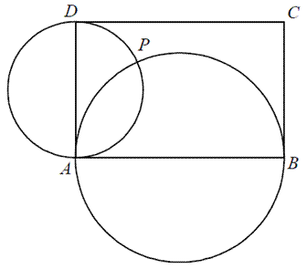
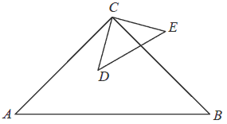
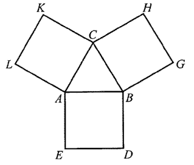
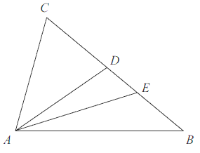
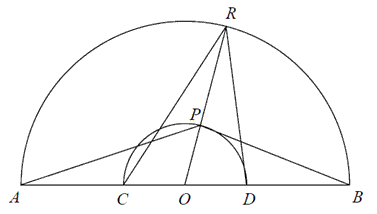
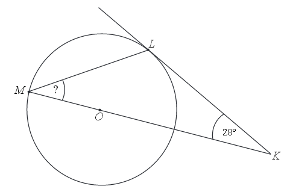
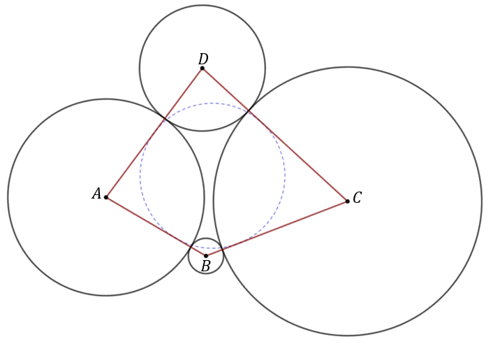

Jesteś tutaj: Matura → Zadania dowodowe
Zadania dowodowe
Na tej stronie znajduje się zestawienie dowodowych zadań maturalnych za 2 punkty.
Uzasadnij, że jeżeli \((a^2+b^2)(c^2+d^2)=(ac+bd)^2\) to
\(ad=bc\).
Wykaż, że jeżeli \(a>0\) i \(b>0\) oraz
\(\sqrt{a^2+b}=\sqrt{a+b^2}\), to \(a=b\) lub \(a+b=1\).
Uzasadnij, że jeżeli \(a + b = 1\) i \(a^2 + b^2 = 7\), to \(a^4 + b^4 = 31\).
Uzasadnij, że jeżeli \(a \ne b\), \(a \ne c\), \(b \ne c\) i \(a + b = 2c\), to
\(\frac{a}{a-c}+\frac{b}{b-c}=2\).
Uzasadnij, że jeżeli \(\alpha\) jest kątem ostrym, to \(\sin^4\alpha + \cos^2\alpha
= \sin^2\alpha + \cos^4\alpha\).
Uzasadnij, że jeżeli \(a\) jest liczbą rzeczywistą różną od zera i \(a+\frac{1}{a}=3\), to \(a^2+\frac{1}{a^2}=7\)
Wykaż, że liczba \(6^{100}-2 \cdot 6^{99}+10 \cdot
6^{98}\) jest podzielna przez \(17\).
Wykaż, że trójkąt o wierzchołkach \(A=(3, 8), B=(1, 2), C=(6, 7)\ \) jest
prostokątny.
Uzasadnij, że jeśli liczby rzeczywiste \( a, b, c \) spełniają nierówności \( 0 \lt
a \lt b \lt c \), to \( \frac{a+b+c}{3}>\frac{a+b}{2} \).
Wykaż, że jeśli \(a>0\), to \(\frac{a^2+1}{a+1}\ge
\frac{a+1}{2}\).
Udowodnij, że dla dowolnych liczb rzeczywistych \(x\) i \(y\) prawdziwa jest
nierówność \[x^2+xy+y^2\ge 2x+2y-4\]
Udowodnij, że dla dowolnych liczb rzeczywistych \(x,y,z\) takich, że \(x+y+z=3\) prawdziwa jest nierówność: \(x^2+y^2+z^2\ge 3\).
Wykaż, że jeżeli ramiona \(AD\) i \(BC\) trapezu \(ABCD\) o podstawach \(AB\) i
\(CD\) zawierają się w prostych prostopadłych (zobacz rysunek), to \(|AB|^2 + |CD|^2 = |AC|^2 +
|BD|^2\). 
Dany jest prostokąt \(ABCD\). Okręgi o średnicach \(AB\) i \(AD\) przecinają się w
punktach \(A\) i \(P\) (zobacz rysunek). Wykaż, że punkty \(B, P\) i \(D\) leżą na jednej prostej.

Na odcinku \(AB\) wybrano punkt \(C\), a następnie zbudowano trójkąty równoboczne
\(ACD\) i \(CBE\) tak, że wierzchołki \(D\) i \(E\) leżą po tej samej stronie prostej \(AB\). Okręgi
opisane na tych trójkątach przecinają się w punktach \(C\) i \(P\) (zobacz rysunek).  Udowodnij, że miara kąta \(APB\) jest
równa \(120^\circ \).
Udowodnij, że miara kąta \(APB\) jest
równa \(120^\circ \).
Udowodnij, że miara kąta \(APB\) jest
równa \(120^\circ \).Na boku \(DC\) kwadratu \(ABCD\) obrano punkt \(K\) tak, że \(|DK| = |KC|\) (rys.).
Przekątna \(AC\) kwadratu przecina odcinek \(BK\) w punkcie \(P\). Uzasadnij, że pole trójkąta
\(ABP\) jest czterokrotnie większe niż pole trójkąta \(KCP\). 
Wykaż, że liczby \(a=\frac{-5}{2\sqrt{2}+3}\) oraz \(b=|10\sqrt{2}-15|\) są liczbami przeciwnymi.
Dana jest liczba \(a=\sqrt{(2-2\sqrt{5})^2}-2\sqrt{5}\).
Wykaż, że liczba \(a\) jest całkowita.
Wykaż, że jeżeli \(c\lt 0\), to trójmian kwadratowy \(y=x^2+bx+c\) ma dwa różne miejsca zerowe.
Uzasadnij, że równanie \(x^2+(b-2)x-2b=0\) dla dowolnej
liczby rzeczywistej \(b\) ma przynajmniej jedno rozwiązanie.
Wykaż, że wysokość \(CD\) trójkąta prostokątnego \(ABC\) poprowadzona z wierzchołka
\(C\) kąta prostego dzieli przeciwprostokątną na odcinki \(AD\) i \(DB\), których stosunek długości
jest równy stosunkowi kwadratów długości przyprostokątnych odpowiednio \(AC\) i \(BC\) tego
trójkąta.
W trójkącie prostokątnym jedna przyprostokątna jest \(4\) razy większa od drugiej.
Wykaż, że wysokość opuszczona na przeciwprostokątną dzieli ją na odcinki, z których jeden jest
\(16\) razy większy od drugiego.
W trójkącie prostokątnym przyprostokątne mają długość \(a\) i \(b\), zaś naprzeciw
boku \(a\) znajduje się kąt ostry \(\alpha\). Wykaż, że jeśli \(\operatorname{tg}
\alpha = 2,\) to:\[\frac{(a+b)\cdot b}{a^2-b^2}=1\]
Dane są kwadraty: \(ABCD\) i \(CEFG\) (zobacz rysunek poniżej). Wykaż, że
\(|DE|=|BG|\). 
Dany jest równoległobok \(ABCD\). Na przedłużeniu przekątnej \(AC\) wybrano punkt
\(E\) tak, że \(|CE|=\frac{1}{2}|AC|\). Uzasadnij, że pole równoległoboku \(ABCD\) jest cztery razy
większe od pola trójkąta \(DCE\). 
Uzasadnij, że suma kwadratów trzech kolejnych liczb całkowitych przy dzieleniu
przez \(3\) daje resztę \(2\).
Trójkąty prostokątne równoramienne \(ABC\) i \(CDE\) są położone tak, jak na
poniższym rysunku (w obu trójkątach kąt przy wierzchołku C jest prosty). Wykaż, że \(AD = BE\). 
W trójkącie \(ABC\) poprowadzono dwusieczne kątów \(A\) i \(B\). Dwusieczne te
przecinają się w punkcie \(P\). Uzasadnij, że kąt \(APB\) jest rozwarty.
Trójkąt ABC przedstawiony na poniższym rysunku jest równoboczny, a punkty \(B, C,
N\) są współliniowe. Na boku \(AC\) wybrano punkt \(M\) tak, że \(|AM| = |CN|\). Wykaż, że
\(|BM| = |MN|\). 
Uzasadnij, że dla każdej dodatniej liczby całkowitej n liczba \(3^{n+2} - 2^{n+2} +
3^n - 2^n\) jest wielokrotnością liczby \(10\).
Udowodnij, że iloczyn kolejnych liczb naturalnych od \(1\) do \(16\), czyli
\(1\cdot 2\cdot 3\cdot ...\cdot 16\), jest podzielny przez \(2^{15}\).
Na bokach trójkąta równobocznego \(ABC\) (na zewnątrz tego trójkąta) zbudowano
kwadraty \(ABDE\), \(CBGH\) i \(ACKL\). Udowodnij, że trójkąt \(KGE\) jest równoboczny. 
Czworokąty \(ABCD\) i \(APQR\) są kwadratami. Udowodnij, że \(|BP| = |DR|\). 
Na boku \(BC\) trójkąta \(ABC\) wybrano punkt \(D\) tak, by \(|\sphericalangle CAD|
= |\sphericalangle ABC|\). Odcinek \(AE\) jest dwusieczną kąta \(DAB\). Udowodnij, że \(|AC| =
|CE|\). 
W trójkącie prostokątnym jedna z przyprostokątnych ma długość \(a\). Kąt ostry przy
tym boku ma miarę \(\alpha \). Wykaż, że \(\sin \alpha +\cos \alpha >1\).
Wykaż, że przekątna prostopadłościanu o krawędziach długości \(a, b, c\) ma długość
\(\sqrt{a^2+b^2+c^2}\).
Punkt \(D\) leży na boku \(BC\) trójkąta równoramiennego \(ABC\), w którym \(|AC| =
|BC|\). Odcinek \(AD\) dzieli trójkąt \(ABC\) na dwa trójkąty równoramienne w taki sposób, że \(|AD|
= |CD|\) oraz \(|AB| = |BD|\) (patrz rysunek). Udowodnij, że \(|\sphericalangle ADC| = 5\cdot
|\sphericalangle ACD| \) . 
Dane są dwa półokręgi o wspólnym środku \(O\) i średnicach odpowiednio \(AB\) i
\(CD\) (punkty \(A, B, C, D\) i \(O\) są współliniowe). Punkt \(P\) leży na wewnętrznym półokręgu,
punkt \(R\) leży na zewnętrznym półokręgu, punkty \(O, P\) i \(R\) są współliniowe. Udowodnij, że
\(|\sphericalangle APB| + |\sphericalangle CRD| = 180^\circ\). 
Wykaż, że prawdziwa jest nierówność \(\sqrt{2^{50} + 1} + \sqrt{2^{50} - 1} \lt
2^{26}\).
Udowodnij, że jeśli:
a) \(x, y\) są liczbami rzeczywistymi,
to \(x^2 + y^2 \ge 2xy\).
b) \(x, y, z\) są liczbami rzeczywistymi takimi, że \(x + y + z = 1\), to \(x^2 + y^2 + z^2 \ge 1/3\).
b) \(x, y, z\) są liczbami rzeczywistymi takimi, że \(x + y + z = 1\), to \(x^2 + y^2 + z^2 \ge 1/3\).
Wykaż, że różnica sześcianów dwóch kolejnych liczb nieparzystych jest podzielna
przez \(2\) i jednocześnie nie jest podzielna przez \(4\).
Punkt \(E\) leży na ramieniu \(BC\) trapezu \(ABCD\), w którym \(AB\parallel CD\).
Udowodnij, że \(|\sphericalangle AED|=|\sphericalangle BAE|+|\sphericalangle CDE|\).
Punkt \(E\) leży na ramieniu \(BC\) trapezu \(ABCD\), w którym \(AB\parallel CD\).
Udowodnij, że jeżeli \(|EC|=|CD|\) oraz \(|EB|=|BA|\) to kąt \(AED\) jest prosty.
Trójkąty prostokątne równoramienne \(ABC\) i \(CDE\) są położone tak jak na
poniższym obrazku (w obu trójkątach kąt przy wierzchołku \(C\) jest prosty). Wykaż, że
\(|AD|=|BE|\).
Dany jest czworokąt \(ABCD\), w którym \(AB \parallel CD\). Na boku \(BC\) wybrano
taki punkt \(E\), że \(|EC|=|CD|\) i \(|EB|=|BA|\). Wykaż, że kąt \(AED\) jest prosty.
Uzasadnij, że dla każdej liczby całkowitej \(k\) liczba \(k^6 − 2k^4 + k^2\) jest
podzielna przez \(36\).
Udowodnij, że dla dowolnych liczb rzeczywistych \(x, y, z\) takich, że \(x+y+z=0\), prawdziwa jest nierówność \(xy+yz+zx\le
0\).
Możesz skorzystać z tożsamości \((x+y+z)^2=x^2+y^2+z^2+2xy+2xz+2yz .\)
Możesz skorzystać z tożsamości \((x+y+z)^2=x^2+y^2+z^2+2xy+2xz+2yz .\)
Wykaż, że trapez, w którym przekątne dzielą kąty przy dłuższej podstawie na połowy,
jest równoramienny.
Uzasadnij, że \( \sqrt{5}+\sqrt{3}=\sqrt{8+2\sqrt{15}} \).
Na bokach trójkąta prostokątnego zbudowano trójkąty równoboczne. Wykaż, że pole
figury zbudowanej na przeciwprostokątnej jest równe sumie pól figur zbudowanych na
przyprostokątnych.
Udowodnij, że reszta z dzielenia liczby \( 34429^3 \) przez \( 17 \) jest równa \(
13 \).
Udowodnij, że punkty \( A=(1,2), B=(-2,8)\) i \( C=(-25,54) \) są współliniowe.
Udowodnij, że każda liczba całkowita \( k \), która przy dzieleniu przez \( 7 \)
daje resztę \( 2 \) ma tę własność, że reszta z dzielenia liczby \( 3k^2 \) przez \( 7 \) jest równa
\( 5 \).
Środek \( S \) okręgu opisanego na trójkącie równoramiennym \( ABC \), o ramionach
\( AC \) i \( BC \), leży wewnątrz tego trójkąta.  Wykaż, że miara kąta wypukłego \( ASB \) jest cztery razy większa od miary
kąta wypukłego \( SBC \).
Wykaż, że miara kąta wypukłego \( ASB \) jest cztery razy większa od miary
kąta wypukłego \( SBC \).
Wykaż, że miara kąta wypukłego \( ASB \) jest cztery razy większa od miary
kąta wypukłego \( SBC \). Wykaż, że suma sześcianów trzech kolejnych liczb naturalnych parzystych jest
podzielna przez \( 24 \).
Dany jest trójkąt \( ABC \), w którym \( |AC|>|BC| \). Na bokach \( AC \) i \( BC
\) tego trójkąta obrano odpowiednio punkty \( D \) i \( E \), że zachodzi równość \( |CD|=|CE|\ \).
Proste \( AB \) i \( DE \) przecinają się w punkcie \( F \) (zobacz rysunek).
Wykaż, że \( |\sphericalangle BAC|=|\sphericalangle ABC|-2\cdot |\sphericalangle AFD| \).
Wykaż, że \( |\sphericalangle BAC|=|\sphericalangle ABC|-2\cdot |\sphericalangle AFD| \).
Wykaż, że liczba \((1+2013^2)(1+2013^4)\) jest dzielnikiem liczby:
\(1+2013+2013^2+2013^3+2013^4+2013^5+2013^6+2013^7\).
\(1+2013+2013^2+2013^3+2013^4+2013^5+2013^6+2013^7\).
Uzasadnij, że żadna liczba całkowita nie jest rozwiązaniem równania
\(\frac{2x+4}{x-2}=2x+1\).
Uzasadnij, że jeżeli liczba całkowita nie dzieli się przez \( 3 \), to jej kwadrat
przy dzieleniu przez \( 3 \) daje resztę \( 1 \).
W pierścieniu kołowym cięciwa zewnętrznego okręgu ma długość \(10\) i jest styczna
do wewnętrznego okręgu (zobacz rysunek).  Wykaż, że pole tego pierścienia można wyrazić wzorem, w którym nie występują promienie
wyznaczających go okręgów.
Wykaż, że pole tego pierścienia można wyrazić wzorem, w którym nie występują promienie
wyznaczających go okręgów.
Wykaż, że pole tego pierścienia można wyrazić wzorem, w którym nie występują promienie
wyznaczających go okręgów.Uzasadnij, że liczba \(4^{12}+4^{13}+4^{14}\) jest podzielna przez \(42\).
Wykaż, że dla każdej liczby rzeczywistej \(x\) i dla każdej liczby rzeczywistej
\(y\) prawdziwa jest nierówność \(4x^2-8xy+5y^2\ge 0\).
Dany jest kwadrat \(ABCD\). Przekątne \(AC\) i \(BD\) przecinają się w punkcie
\(E\). Punkty \(K\) i \(M\) są środkami odcinków - odpowiednio \(AE\) i \(EC\). Punkty \(L\) i \(N\)
leżą na przekątnej \(BD\) tak, że \(|BL|=\frac{1}{3}|BE|\) i \(|DN|=\frac{1}{3}|DE|\) (zobacz
rysunek). Wykaż, że stosunek pola czworokąta \(KLMN\) do pola kwadratu \(ABCD\) jest równy \(1:3\).

Dany jest okrąg o środku w punkcie \(O\). Prosta \(KL\) jest styczna do tego okręgu
w punkcie \(L\), a środek \(O\) tego okręgu leży na odcinku \(KM\) (zobacz rysunek). Udowodnij, że
kąt \(KML\) ma miarę \(31^\circ \). 
Wykaż, że dla wszystkich nieujemnych liczb rzeczywistych \(x\), \(y\) prawdziwa
jest nierówność \(x^3 + y^3 \ge x^2y + xy^2\).
W prostokącie \(ABCD\) punkt \(P\) jest środkiem boku \(BC\), a punkt \(R\) jest
środkiem boku \(CD\). Wykaż, że pole trójkąta \(APR\) jest równe sumie pól trójkątów \(ADR\) oraz
\(PCR\). 
Punkty \(A, B, C\) i \(D\) to środki okręgów, które są styczne zewnętrznie, tak jak
pokazano na rysunku. Udowodnij, że w czworokąt \(ABCD\) można wpisać okrąg. 